搜索与排序
二分搜索
原理与代码实现
希望在一个没有顺序的数组里面，希望找到val元素，如果是线性搜索，时间复杂度是O(n)。那么如果在有序的序列（前提!）中，能不能更快地找到我希望的元素呢？那么可以使用二分搜索。
二分搜索中，有两个下标，一个first一个last，一头一尾。然后首先计算序列中间的元素：int middle = (first + last)/2，然后判断arr[middle] <=> val。如果val更大，说明在middle右边，反之则在左边。同时，要对first last这两个参数进行更新，把去除掉一半部分之后剩下的序列作为新的操作对象。那么什么时候应该停下来呢？假如说val不存在序列里面，那么最后last一定会在first之前。这就是循环停止的标志。
while (first <= last){
int middle = (first + last)/2;
if (arr[middle] > val):{last = middle-1;}
if (arr[middle] < val):{last = middle+1;}
}
// binarysearch.cpp
#include <iostream>
using namespace std;
int BinarySearch(int arr[], int size, int val){
int first = 0;
int last = size - 1;
while (first <= last){
int mid = (first + last) / 2;
if (arr[mid] == val){
return mid;
}
else if (arr[mid] > val){
last = mid - 1;
}
else {
first = mid + 1;
}
}
return -1;
}
二分搜索的时间复杂度是\(O(logn)\)，对数时间比线性时间好很多。但是如何严谨地说：为什么二分搜索是对数时间？其实二分搜索实际上就是对一颗BST树（二叉查找树）从root根节点开始搜索的过程，每一次搜索只会沿着一条路径搜索下去。在这颗树中，对于每一个有孩子的节点来说，如果有右子节点，那么它一定大于父节点；如果有左子节点，它一定小于父节点。可以说，二分搜索时间复杂度就是这棵树的层数。
二分搜索递归实现
递归的形式是函数自己调用自己。在上面中，提到过“把去除掉一半部分之后剩下的序列作为新的操作对象”，因此可以认为“对于一个first 与 last之间的数组进行一次操作，要么更新first或者last下标，对原数组再一次进行二分；要么发现了val函数”这种操作为一个单元；递归结束的条件是first < last。
// binarysearch_recursion.cpp
#include <iostream>
using namespace std;
int BinarySearch(int arr[], int i, int j, int val){
// 递归结束的条件一定要注意！
if (i > j){return -1;}
int mid = (i+j)/2;
if (arr[mid] == val){
return mid;
}
else if (arr[mid] > val){
return BinarySearch(arr, i, mid - 1, val);
}
else{
return BinarySearch(arr, mid + 1, j, val);
}
}
但是递归看似优雅美丽，然而它也有一些头疼的地方：
- 每次递归调用都会在调用栈上分配新的栈帧（stack frame），这会占用内存。如果递归过深，会超出栈的最大深度（Python 默认限制为 1000 次调用），导致
RecursionError: maximum recursion depth exceeded in comparison错误： - 对于某些递归算法，它们利用递归的时候，时间复杂度奇高无比，例如斐波那契数列的计算：\(O(n)\)。下面的程序在n到50的时候，计算一轮甚至需要长达10分钟。
int f(n){
if n == 1 or 0:
return 1;
else:
return f(n-1) + f(n-2);
}
Binary Search Trees 二叉查找树
Definition and Structure
对于一个abstract list来说，它的排序都是由编程者来实现的。但是还有一种list：abstract sorted list，它的元素是按照某种特定顺序排序的。在Sorted List ADT问题中，一般探讨的有以下话题：
- Finding the smallest and largest entries
- Finding the kth largest entry
- Find the next larger and previous smaller objects of a given object which may or may not be in the container
- Iterate through those objects that fall on an interval [a, b]
在array or linked list实现的sorted list中，插入元素的时间复杂度是O(n)，因为插入的位置可能是任何地方，因此遍历是必不可少的。但是这很明显不是我们希望看到的结果。于是，二分搜索树就是一种很好的sorted list结构，而既然能够说“非常好”，那就说明这棵树中依然有很好的"sorted"结构设计：In a binary search tree, we require that
- all objects in the left sub-tree to be less than the object stored in the root node
- all objects in the right sub-tree to be greater than the object in the root object
- the two sub-trees are themselves binary search trees
于是我们能够根据上述的要求，给出recursive定义：The left sub-tree (if any) is a binary search tree and all elements are less than the root element, and the right sub-tree (if any) is a binary search tree and all elements are greater than the root element.
:warning:二叉查找树的中序遍历结果就是sorted array!且换而言之也是成立的： 如果一颗二叉树满足中序遍历结果是递增的，那么这棵树就是查找二叉树！
以下是二叉查找树的例子：

为了搜索一个元素，那么就要在没有找到相同元素之前，不断的比较与元素和（子树）根节点。时间复杂度被认为是O(h)。但是，假如说这棵树非常的不平衡，比如说下面这种情况：数列从小到大排列，而且根节点是最小的元素，因此每一个父节点只有一个右孩子节点。这样的话，时间复杂度就退化到了O(n)，这被认为是worst case。
In a Binary Search Tree, the concept of ’height-balanced’ for a node is defined as: the gap between the height of the left sub-tree and the right sub-tree is no greater than 1.

更恐怖的，一个相同的数列，如果根节点的选取不同，那么整棵树的结构都会非常不一样，同时也导致一些操作，例如搜索，的时间复杂度分析不一样。例如下图：在下图中进行搜索的时候，那么我们就很希望使用的是左上角的二叉搜索树，而不是最右边的。
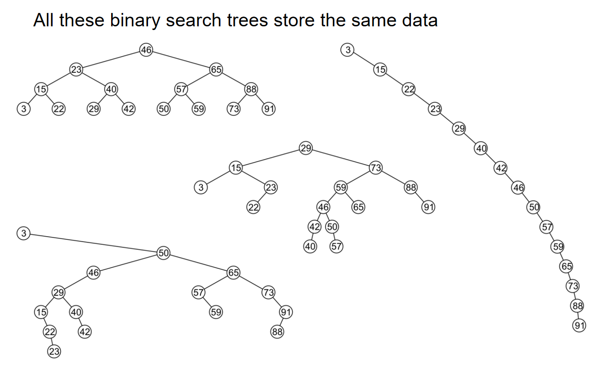
重要！不管二叉查找树怎么画，它的in-order中序遍历一定是一样的！所以说只要知道前序遍历和后序遍历中的任意一个，就能够确定树的结构！
Implementation
首先，我们对于二叉搜索树的建立来说，要明确对重复元素的处理态度：We will assume that in any binary tree, we are not storing duplicate elements unless otherwise stated。这是因为：In reality, it is seldom the case where duplicate elements in a container must be stored as separate entities。
We will look at an implementation of a binary search tree in the same spirit as we did with our \(Single\_list\) class. 那么首先可以想到的是，和单向链表非常相似地，这个类里面一定储存了根节点的指针。
下面代码是一个C++模板类的定义，它继承自Binary_node类，并定义了一个名为Binary_search_node的类，用于实现二叉搜索树的节点：
// Binary_node.h
#include <algorithm> // For std::max
template <typename Type>
class Binary_node {
protected:
Type element; // 存储元素
Binary_node *left_tree; // 指向左子树的指针
Binary_node *right_tree; // 指向右子树的指针
public:
// 构造函数
Binary_node(Type const &obj)
: element(obj), left_tree(nullptr), right_tree(nullptr) {
// 空构造函数
}
// 访问元素的访问器
Type retrieve() const {
return element;
}
// 访问左子树的访问器
Binary_node *left() const {
return left_tree;
}
// 访问右子树的访问器
Binary_node *right() const {
return right_tree;
}
// 判断是否为叶子节点
bool is_leaf() const {
return left() == nullptr && right() == nullptr;
}
// 获取树的大小
int size() const {
return 1
+ (left() == nullptr ? 0 : left()->size())
+ (right() == nullptr ? 0 : right()->size());
}
// 获取树的高度
int height() const {
return empty() ? -1 : 1 + std::max(left()->height(), right()->height());
}
// 清空树，递归删除所有节点
void clear(Binary_node *&ptr_to_this) {
if (empty()) {
return;
}
left()->clear(left_tree);
right()->clear(right_tree);
delete this;
ptr_to_this = nullptr;
}
private:
// 辅助函数，检查节点是否为空
bool empty() const {
return this == nullptr;
}
};
#include "Binary_node.h"
template <typename Type>
class Binary_search_node : public Binary_node<Type> {
using Binary_node<Type>::element;
using Binary_node<Type>::left_tree;
using Binary_node<Type>::right_tree;
public:
Binary_search_node(Type const &); // 构造函数
Binary_search_node* left() const; // 返回左子树的指针
Binary_search_node* right() const; // 返回右子树的指针
Type front() const; // 返回当前节点的元素
Type back() const; // 返回当前节点的元素（与front相同）
bool find(Type const &) const; // 查找元素是否存在
bool insert(Type const &); // 插入元素
bool erase(Type const &, Binary_search_node* &); // 删除元素
};
该类的构造函数会使用基类的构造函数；同时Type retrieve() const;bool is_leaf() const;int size() const;int height() const;这些方法也是继承自基类的。
基类返回的是基类的指针，那么此处我们必须返回Binary_search_node的指针，而且是一左一右，换而言之就是需要对基类返回的指针进行一次类型的转换：
template <typename Type>
Binary_search_node<Type> *Binary_search_node<Type>::left() const {
return reinterpret_cast<Binary_search_node *>( Binary_node<Type>::left() );
}
template <typename Type>
Binary_search_node<Type> *Binary_search_node<Type>::right() const {
return reinterpret_cast<Binary_search_node *>( Binary_node<Type>::right() );
}
Basic Operation
第一种操作是搜索最小和最大的元素，那么其实很简单，就是一直走左、右孩子节点直到访问的子节点不再拥有左、右节点：（注意！极值不一定是叶子结点！）。它的时间复杂度是O(h)，其中h代表树的高度。
template <typename Type>
Type Binary_search_node<Type>::front() const {
return ( left() == nullptr ) ? retrieve() : left()->front();
}
template <typename Type>
Type Binary_search_node<Type>::back() const {
return ( right() == nullptr ) ? retrieve() : right()->back();
}
第二种操作就是搜索元素，那么元素和节点进行比较，如果相同就是true，如果元素比根节点大，就访问节点的右孩子节点，反之访问节点的左孩子节点。直到访问到空指针，那么就说明元素不再二叉搜索树里面。
template <typename Type>
bool Binary_search_node<Type>::find( Type const &obj ) const {
if ( retrieve() == obj ) {
return true;
}
if( obj < retrieve() )
return left()==nullptr? false : left()->find( obj );
else
return right()==nullptr? false : right()->find( obj );
}
上述代码很巧妙的地方在于使用了递归结构，避免了复杂的循环结构。同样，上述操作的时间复杂度是O(h)。
第三种操作是插入。Insertion will be performed by a single \(insert\) member function which places the object into the correct location。如下图所示：任何一刻空的节点都可能是插入的地方。

因此，就像find操作一样，我们遍历这棵树，如果发现了某一个节点元素和插入元素一样，那么就直接return。否则，我们最终会到达一个空节点，也就是访问到了一个空指针，那么这个地方就是元素插入的地方，时间复杂度是O(h)。代码模板如下：

第四种操作是删除。删除的节点有三种情况：第一种是叶子节点，第二种是该节点恰好有一个孩子，第三种是该节点有两个孩子，也就是满节点。如果是删除叶子结点，那么节点删除，并且它的父节点记录的left_tree应该设置为空指针。如果是第二种情况，可以认为是该节点唯一的孩子直接上位，连接到该节点的父节点上（孙子找爷爷），这样操作在指针的代码设计上较为方便。
如果是第三种情况，相对来说较为复杂，我们需要进行两步操作：第一步，找到该节点的右子树里面的最小值，并且replace掉该节点；第二步，删除掉这个右子树里面的最小值节点，值得注意的是，删除这个最小值节点也可能是前两种情况中的一种。那么为什么这个最小值节点不可能拥有两个孩子？因为如果有的话，那岂不是该节点的左节点比它还小，那么该节点还是不是最小的呢？
模板代码如下图：

Full Implementation Code
#include "Binary_node.h"
template <typename Type>
class Binary_search_node : public Binary_node<Type> {
using Binary_node<Type>::element;
using Binary_node<Type>::left_tree;
using Binary_node<Type>::right_tree;
public:
Binary_search_node(Type const &obj) : Binary_node<Type>(obj) {}
Binary_search_node *left() const {
return static_cast<Binary_search_node *>(Binary_node<Type>::left());
}
Binary_search_node *right() const {
return static_cast<Binary_search_node *>(Binary_node<Type>::right());
}
Type front() const {
return (left() == nullptr) ? retrieve() : left()->front();
}
Type back() const {
return (right() == nullptr) ? retrieve() : right()->back();
}
bool find(Type const &obj) const {
if (retrieve() == obj) {
return true;
} else if (obj < retrieve()) {
return (left() == nullptr) ? false : left()->find(obj);
} else {
return (right() == nullptr) ? false : right()->find(obj);
}
}
bool insert(Type const &obj, Binary_search_node *&ptr_to_this) {
if (empty()) {
ptr_to_this = new Binary_search_node<Type>(obj);
return true;
} else if (obj < retrieve()) {
return left()->insert(obj, left_tree);
} else if (obj > retrieve()) {
return right()->insert(obj, right_tree);
} else {
return false;
}
}
bool erase(Type const &obj, Binary_search_node *&ptr_to_this) {
if (empty()) {
return false;
} else if (obj == retrieve()) {
if (is_leaf()) {
ptr_to_this = nullptr;
delete this;
} else if (!left()->empty() && !right()->empty()) {
element = right()->front();
right()->erase(retrieve(), right_tree);
} else {
ptr_to_this = (!left()->empty()) ? left() : right();
delete this;
}
return true;
} else if (obj < retrieve()) {
return left()->erase(obj, left_tree);
} else {
return right()->erase(obj, right_tree);
}
}
};
template <typename Type>
class Binary_search_tree {
private:
Binary_search_node<Type> *root_node;
Binary_search_node<Type> *root() const {
return root_node;
}
public:
Binary_search_tree() : root_node(nullptr) {}
~Binary_search_tree() {
clear();
}
void clear() {
root()->clear(root_node);
}
bool empty() const {
return root() == nullptr;
}
int size() const {
return root() == nullptr ? 0 : root()->size();
}
int height() const {
return root() == nullptr ? 0 : root()->height();
}
Type front() const {
return root() == nullptr ? throw std::underflow_error("Empty tree") : root()->front();
}
Type back() const {
return root() == nullptr ? throw std::underflow_error("Empty tree") : root()->back();
}
bool find(Type const &obj) const {
return root() == nullptr ? false : root()->find(obj);
}
bool insert(Type const &obj) {
return root()->insert(obj, root_node);
}
bool erase(Type const &obj) {
return root()->erase(obj, root_node);
}
};
Other Relation-Based Operation
We will quickly consider two other relation-based queries that are very quick to calculate with an array of sorted objects: Finding the previous and next entries, and Finding the kth entry.
对于“寻找先前的和后一个的元素”问题，我们此处先聚焦于寻找下一个（更大的）元素。对于一个节点来说，如果想要找到下一个比它大的元素，如果这个节点有右子树，那么右子树的最小值就是这个节点元素的下一个元素，这一点是很容易认同的。但是如果这个节点没有右子树，那么该节点的下一个元素就是就是该节点到根节点的path（注意方向）中的第一个比它大的元素（如果存在的话）（注意方向！注意不是路径上的最大值！）。
More generally: find the next entry of an arbitrary object？We can design a function that:
- runs a single search from the root node to one of the leaves—an O(h) operation
- returns the input object if it did not find something greater than it
这个single search的代码如下图，从中也能看出规则是什么：
- 从根节点开始，如果遇到的节点等于obj，那么如果这个节点没有右孩子节点，那么就返回obj本身，否则就返回右子树的front（即minimum）。
- 如果遇到的节点大于obj，那么如果这个节点没有左孩子节点，那么就返回该节点的元素，否则左孩子节点也进行一次next方法的调用，比较之前的obj和左孩子节点调用next得到的结果，如果调用返回的是obj，那么说明下一个更大的就是之前那个比obj大的元素，反之下一个更大的就是左孩子节点调用next得到的结果。
- 如果遇到的节点小于obj，那么如果这个这个节点没有右孩子节点，那么就说明之后的所有节点的元素都比obj小，返回的是obj；反之，则调用右孩子节点的next方法。

而对于寻找第k个元素问题，\(k\in [0,n-1]\)，我们定义如下的规则：
- 对于树的根节点来说，如果左子树有k个元素，那么就返回当前节点。
- 对于树的根节点来说，如果左子树有大于k个元素，那么就返回左子树的第k个元素
- 对于树的根节点来说，如果左子树有小于k个元素，那么就返回右子树的第\((k-l-1)\)个元素。
上述规则能够实现的最核心的原因，就是代码中提供了\(at()\)方法接口，能够返回一颗二叉树的第k个元素节点。这个操作的时间复杂度是O(1)，但是空间复杂度是O(n)，这是因为为了支持\(at()\)，二叉树类里面有int tree_size;参数用来记录节点的所有后代的数量，对于每一个节点来说，都有这样的一个属性的记录。
示意图如下：
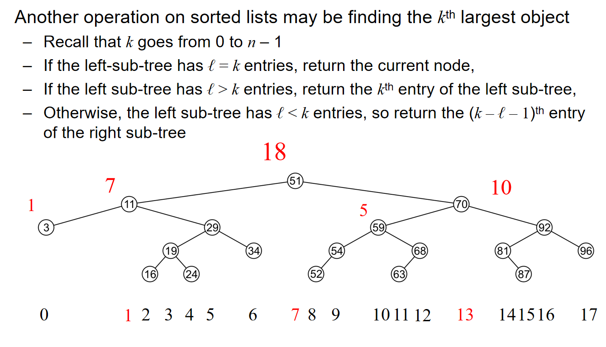
提及到int tree_size;参数的设计，因此这里需要更新update and erase方法，从而实现配合！

C/C++中，任何非零的值都认为是true.
Run Time on BST

Introduction of Sorting
In these topics, we will assume that: We are sorting integers, and Arrays are to be used for both input and output. Sorting algorithms may be performed in-place, that is, with the allocation of at most Q(1) additional memory (e.g., fixed number of local variables). Other sorting algorithms require the allocation of second array of equal size. We will prefer in-place sorting algorithms.
The run time of the sorting algorithms we will look at fall into one of three categories: \(\Theta(n)\ \Theta(nln(n)) \ O(n^2)\). (Run-time classification) We will examine average- and worst-case scenarios for each algorithm. The run-time may change significantly based on the scenario.
About the Lower-bound Run-time of any algorithm: Any sorting algorithm must examine each entry in the array at least once. Consequently, all sorting algorithms must be \(\Omega(n)\). We will not be able to achieve \(\Theta(n)\) behaviour without additional assumptions.
Five sorting techniques are illustrated as follows:

At the same time, The general worst-case run time is \(\Omega(nlg(n))\)（基于比较的排序算法的时间复杂度下限是\(O(nlg(n))\)的。). The proof can be presented as follows:
- Any comparison-based sorting algorithm can be represented by a comparison tree
- Worst-case running time cannot be less than the height of the tree
- How many leaves does the tree have? The number of permutations of n objects, which is n!
- What’s the shallowest tree with n! leaves? A complete tree, whose height is lg(n!), and it can be shown that \(lg(n!) = \Theta(n lg(n))\)
The illustration of a comparison tree can be presented as follows: 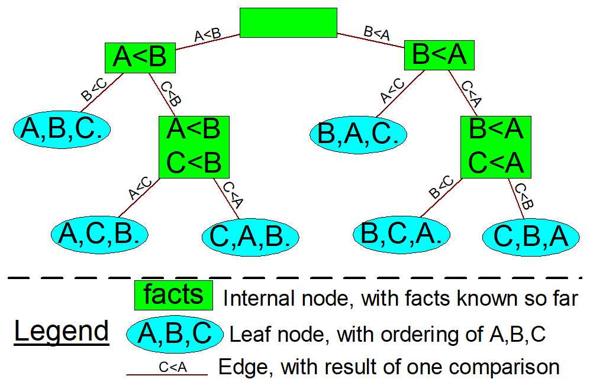
同时引入稳定性的概念：
Reference: oi.wiki
稳定性是指相等的元素经过排序之后相对顺序是否发生了改变。拥有稳定性这一特性的算法会让原本有相等键值的纪录维持相对次序，即如果一个排序算法是稳定的，当有两个相等键值的纪录R和S，且在原本的列表中R出现在S之前，在排序过的列表中R也将会在S之前。
基数排序、计数排序、插入排序、冒泡排序、归并排序是稳定排序。
选择排序、堆排序、快速排序、希尔排序不是稳定排序。
The stability of a sorting algorithm is concerned with how the algorithm treats equal (or repeated) elements. Stable sorting algorithms preserve the relative order of equal elements, while unstable sorting algorithms don’t. In other words, stable sorting maintains the position of two equals elements relative to one another.
Inversions
Given a permutation of n elements, \(a_o, \dots, a_{n-1}\), an inversion is defined as a pair of entries which are reversed. That it, for \((a_j, a_k)\), \(a_j > a_k,if\ j<k\). 可想而知，假如说我们交换两个相邻的元素，那么我们有可能引入一个inversion（倒置），或者说消除一个倒置。对于n个数，一共有\(\binom{n}{2}=\frac{n(n-1)}{2}\)个pair，而pair要么是倒置inversion，要么是ordered pair。
\(Theorem:\) 对于任何一个随机排列的n个元素的array，inversion pairs的个数的期望是\(\frac{n(n-1)}{2}\)。这个有什么用呢？ 数列的inversion的数量占pairs的比重可以反映一个数组的排列是有“多乱”。例子如下：

那么，swapping two adjacent entries要么移除一个inversion, 要么引入一个inversion。注意这里的措辞：“要么...要么...”，且是一个。我们已经知道，一共有\(\binom{n}{2}=\frac{n(n-1)}{2}\)个pair，那么可以预测到：如果是随机分布的数组，逆序对数量的期望是：
Insertion Sort 插入排序
algorithm
In general, if we have a sorted list of k items, we can insert a new item to create a sorted list of size k + 1。考虑下面这一个数组，前面5-40的元素都是按照顺序排列好的，那么我希望将后面的元素也排列好。现在，就设想我希望将元素14插入到前面正确的位置：
From oi.wiki：将待排列元素划分为「已排序」和「未排序」两部分，每次从「未排序的」元素中选择一个插入到「已排序的」元素中的正确位置。
| 5 | 7 | 12 | 19 | 21 | 26 | 33 | 40 | 14 | 9 | 18 | 21 | 2 |
|---|---|---|---|---|---|---|---|---|---|---|---|---|

14从前面有序数列的末尾开始一个个判断，如果左边的数字比它大，那么就和左边的元素交换位置，一直交换到正确的位置，即左边的数字比他小。For any unsorted list，Treat the first element as a sorted list of size 1。Then, given a sorted list of size k – 1，insert the k-th item into the sorted list. The sorted list is now of size k. 很明显，插入排序使用的是五大排序技巧中的insertion。
Implementation
首先是一个小技巧：交换元素的操作其实还多了一步“右边元素放在左边的操作”，在连续交换的过程中，这些操作是冗余的。因此：we could just temporarily assign the new entry。示意图如下：

c++实现非常简单：(注意这里面j作用域的细节！跳出循环时的j我需要使用，那么这个j的定义就不能放在for循环里面，而应该放在外面；以及函数要传入size的原因是数组进入函数之后就会退化为指针，引索访问依然合法，但是不清楚数组的长度)
// insert_sort.cpp
void InsertSort(int arr[], int size){
for (int i = 0; i < size; i++){
int val = arr[i];
int j = i-1;
for (; j >= 0; j--){
if (arr[j] <= val){
break;
}
arr[j+1] = arr[j];
}
arr[j+1] = val;
}
}
Analysis
插入排序是一种稳定的排序算法。
可以设想到的是：在worst-cases中，完全倒序的情况下，算法的时间复杂度是\(\Theta(n^2)\)，因为：the outer for-loop will be executed a total of n – 1 times and the inner for-loop is executed k times, when in the worst case。
在best-case中，时间复杂度是\(\Theta(n)\)，因为最好的情况是完全排好序了，这种情况下只需要进行n（更细节地：n-1）次判断该元素和左边的元素有多大。话是如此，但是事实上：Insertion sort, however, will run in \(\Theta (n)\) time whenever d = O(n), 其中d代表inversions的数量。那么在刚刚描述的最好的情况下，其实d也是\(O(n)\)，因为\(0 <= 0*n\)。
那么这个事实为什么是对的呢？因为n是至少进行判断的次数，或者说，从一次处理逆序对的操作开始的结束时刻，伴随着一次判断发现这个目标元素左边的元素小于目标元素从而停止操作，这一次判断是必不可少的，而这种判断一共有n次。而d是哪里来的呢？每一次交换元素的数据都是在处理一对逆序对，不会引入逆序对，而我们知道对于一次交换元素来说，要么消除逆序对，要么引入逆序对，所以说run time is \(\Theta(n+d)\). 这也解释了为什么：Insertion sort, however, will run in \(\Theta (n)\) time whenever d = O(n)

最后，Memory requirements是\(\Theta(1)\)。可以这么说：如果数据区域有序（d=O(n)），那么插入排序是所有排序算法中，效率最高的排序算法！在基础排序算法中，插入排序>冒泡排序&选择排序。不仅仅没有交换（trick in implementation），而且比较的次数也少！
Bubble Sort 冒泡排序
algorithm
Suppose we have an array of data which is unsorted: Starting at the front, traverse the array, find the largest item, and move (or bubble) it to the top. With each subsequent iteration, find the next largest item and bubble it up towards the top of the array.
简单而言：在一轮从头操作中，从第一个元素开始遍历引索（而不是元素），如果引索对应的元素的右边元素比引索元素大，那么就不动，遍历下一个引索，反之则交换两个元素。通过这种方式，可以通过简单的思考就能发现：一轮操作中，总是能把最大的元素放在最后一个位置。那么进入第i轮操作，就是把第i大的元素放在倒数第i个位置。这种操作将重复n(或者说n-1)次。
Implementation
// bubble_sort.cpp
#include <iostream>
#include <stdlib.h>
#include <time.h>
using namespace std;
void BubbleSort(int arr[], int size){
for (int i = 0; i < size-1; i++){
for (int j = 0; j < size - 1 - i; j++){
if (arr[j] > arr[j+1]){
int tmp = arr[j];
arr[j] = arr[j+1];
arr[j+1] = tmp;
}
}
}
}
int main(){
int arr[10];
srand(time(NULL));
for (int i = 0; i < 10; i++){
arr[i] = rand() % 100 + 1;
}
for (int v : arr){
cout << v << " ";
}
cout << endl;
BubbleSort(arr, 10);
for (int v : arr){
cout << v << " ";
}
cout << endl;
}
analysis
Here we have two nested loops, and therefore calculating the run time is straight-forward: 它没有使用任何标志（flag）来检测数列是否已经排序完成。这意味着无论数列是否已经排序，它都会执行所有的比较和可能的交换操作。因此，对于这个版本的冒泡排序，时间复杂度是\(O(n^2)\)。
无论冒泡排序使用了什么优化，冒泡排序的时间复杂度几乎总是不会比插入排序低，因为冒泡排序相比于插入排序会做更多次没有必要的比较（而不是交换！两者做的交换操作其实是一样多的。）
Improvements
上面也提到了，这种算法的流程图很固定，而且很numb。那么我们能不能引入一些优化呢？比如说：reduce the number of swaps, halting if the list is sorted, limiting the range on which we must bubble, alternating between bubbling up and sinking down。
Flagged Bubble Sort
在原来的算法中，假如说在第i轮操作结束之后，所有的元素都排列整齐了，但依然需要进行接下来的n-i轮操作。所以说考虑：在一轮操作中记录是否有进行交换，如果没有，说明已经是完全排列好的状态，就不用再继续排序了！因此我们可以用代码中的flag技巧来实现这一点：
template <typename Type>
void bubble( Type *const array, int const n ) {
for ( int i = n - 1; i > 0; --i ) {
Type max = array[0];
bool sorted = true; // FLAG!
for ( int j = 1; j <= i; ++j ) {
if ( array[j] < max ) {
array[j - 1] = array[j];
sorted = false;
} else {
array[j – 1] = max;
max = array[j];
}
}
array[i] = max;
if ( sorted ) {
break;
}
}
}
// bubble_sort.cpp
void FlaggedBubbleSort(int arr[], int size){
for (int i = 0; i < size-1; i++){
bool flag = false;
for (int j = 0; j < size - 1 - i; j++){
if (arr[j] > arr[j+1]){
int tmp = arr[j];
arr[j] = arr[j+1];
arr[j+1] = tmp;
flag = true;
}
}
if (!flag){
return;
}
}
}
Range-Limiting Bubble Sort
Intuitively, one may believe that limiting the loops based on the location of the last swap may significantly speed up the algorithm. 比如说在一轮操作中，最后一次进行交换的位置非常靠前，这说明什么？这说明最后一次交换后面的元素其实都是已经排列好了的！很可惜的是，in practice，这个操作带来的影响并不是很大。虽然但是，下面是实现的代码：
template <typename Type>
void bubble( Type *const array, int const n ) {
for ( int i = n - 1; i > 0; ) {
Type max = array[0];
int ii = 0;
for ( int j = 1; j <= i; ++j ) {
if ( array[j] < max ) {
array[j - 1] = array[j];
ii = j - 1;
} else {
array[j – 1] = max;
max = array[j];
}
}
array[i] = max;
i = ii;
}
}
注意这里i的更新不再是木讷的i++了，而是根据最后一次交换的位置而更新i参数，为的就是跳过不必要的epoch operation。
Alternating Bubble Sort
One operation which does significantly improve the run time is to alternate between bubbling the largest entry to the top, ands inking the smallest entry to the bottom.
以下是交替冒泡排序的基本步骤：
- 从数组的开始到结束遍历数组，比较相邻的元素，如果前一个元素比后一个元素大（升序排序），则交换它们。
- 完成第一轮遍历后，最大的元素会被放置在数组的末尾。
- 然后从数组的末尾开始向前遍历，重复步骤1，直到遍历到数组的开始。
- 继续交替遍历方向，直到没有元素需要交换，这意味着数组已经完全有序。
reference: kimi.moonshot.cn
Because the bubble sort simply swaps adjacent entries, it cannot be any better than insertion sort which does n + d comparisons where d is the number of inversions 这一点十分重要！
The following table summarizes the run-times of our modified bubble sorting algorithms; however, they are all worse than insertion sort in practice:
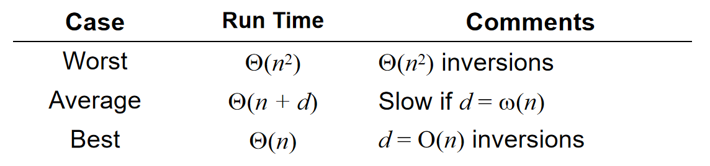
Merge Sort 归并排序
algorithm
The merge sort algorithm is defined recursively: If the list is of size 1, it is sorted—we are done; Otherwise:
-
Divide an unsorted list into two sub-lists,
-
Sort each sub-list recursively using merge sort, and
-
Merge the two sorted sub-lists into a single sorted list
In practice: If the list size is less than a threshold, use an algorithm like insertion sort.
This strategy is called divide-and-conquer. Merging Sort明显使用的是五大排序技巧中的Merging。那么如何merging呢？假设有两个ordered array，然后创建一个新array，然后用两套引索：哪个array 引索的元素更小，那么元素就放进array，然后这个引索++。当有一个数组遍历完之后，另外一个数组剩余的元素全部按照顺序放进去。就这一点是很好理解的，但是这种操作的核心关键就是two ordered array。
Time: we have to copy n1 + n2 elements. Hence, merging may be performed in \(\Theta(n1 + n2)\) time. If the arrays are approximately the same size, n = n1 ≈ n2, we can say that the run time is \(\Theta(n)\). Space: we cannot merge two arrays in-place. This algorithm always required the allocation of a new array. Therefore, the memory requirements are also \(\Theta(n)\).
Implementation
// merge_sort.cpp
#include <iostream>
#include <stdlib.h>
#include <time.h>
using namespace std;
void Merge(int arr[], int left, int mid, int right){
// 需要额外的内存空间，把两个小段有序的序列，合并成大段有序的序列
int* p = new int[right-left+1];
int idx = 0;
int i = left;
int j = mid + 1;
while (i <= mid && j <= right){
if (arr[i] <= arr[j]){
p[idx++] = arr[i++];
}
else {
p[idx++] = arr[j++];
}
}
while (i <= mid){
p[idx++] = arr[i++];
}
while (j <= right){
p[idx++] = arr[j++];
}
// 把合并好的大段有序结果拷贝到原始数组[left, right]区间内
for (i = left, j = 0; i <= right; i++, j++){
arr[i] = p[j];
}
delete[] p;
}
void MergeSort(int arr[], int begin, int end){
// 递归结束的条件
if (begin >= end){
return;
}
int mid = (begin + end) / 2;
// 先递
MergeSort(arr, begin, mid);
MergeSort(arr, mid + 1, end);
// 再归并 [begin, mid] [mid + 1, begin]这两段有序的序列
Merge(arr, begin, mid, end);
}
void MergeSort(int arr[], int size){
MergeSort(arr, 0, size-1);
}
Run-Time Analysis

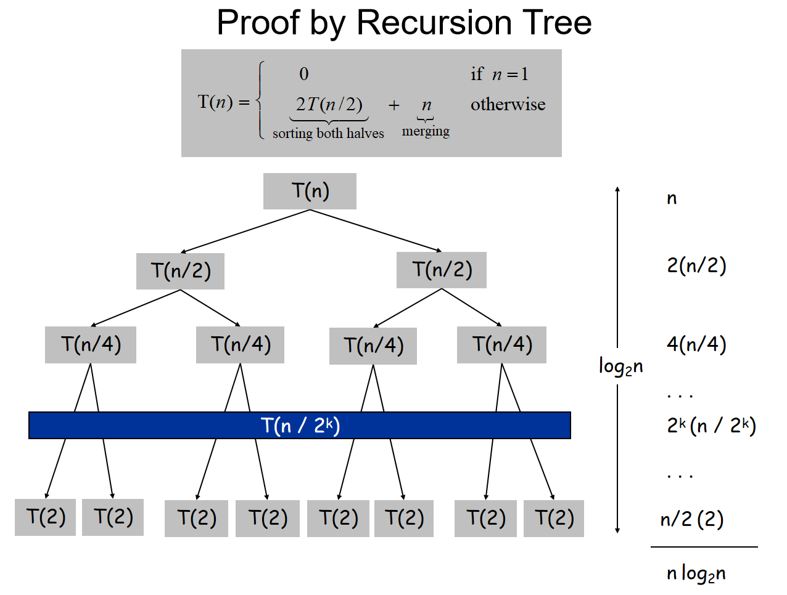

那么可能会很好奇：为什么不是\(O(n^2)\)。换而言之：是什么特殊的操作帮助我们减少了时间复杂度？下面这张图生动地展示了原因：

In practice, merge sort is faster than heap sort, though they both have the same asymptotic run times. Merge sort requires an additional array, and Heap sort does not require.
同时，归并排序的空间复杂度是\(\Theta(n)\)
Divide and Conquer（分治）
Reference: kimi.moonshot.cn
分治（Divide and Conquer）思想是一种解决问题的策略，它将一个复杂的问题分解（Divide）成若干个相同或相似的子问题，递归地解决这些子问题（Conquer），然后将子问题的解合并（Combine）起来以解决原始问题。分治法是算法设计中的一种重要方法，尤其在处理大规模数据或复杂计算时非常有效。
分治思想的基本步骤通常包括以下几个阶段：
- 分解（Divide）：
- 将原问题分解为若干个规模较小的相同问题。分解的目的是简化问题，使其更容易解决。分解的粒度取决于问题的性质和解决策略。
- 解决（Conquer）：
- 分别解决这些分解出来的子问题。如果子问题足够小，可以直接解决；如果子问题仍然复杂，则可以递归地应用分治策略。
- 合并（Combine）：
- 将子问题的解合并，构建出原问题的解。合并操作的复杂度通常比子问题解决的复杂度要低，这是分治法有效性的关键。
分治法在算法设计中的应用非常广泛，以下是一些典型的分治算法示例：
- 归并排序（Merge Sort）：
- 将数组分成两半，递归地对每一半进行排序，然后将排序好的两半合并。
- 快速排序（Quick Sort）：
- 选择一个基准元素，将数组分为两部分，一部分包含所有小于基准的元素，另一部分包含所有大于基准的元素，然后递归地对这两部分进行快速排序。
- 二分搜索（Binary Search）：
- 在有序数组中查找一个元素，通过每次比较中间元素将搜索范围缩小一半。
分治法的优点在于它能够将复杂问题简化，使得问题更容易解决，并且可以利用子问题的解来构建原问题的解。然而，分治法也有其局限性，比如递归可能导致栈溢出，合并操作可能需要额外的时间和空间等。因此，在应用分治法时，需要仔细分析问题的性质和算法的效率。
Merge Sort for counting inversions
Counting inversions can be achieved by Merge Sort with simply a counter. (计数器)
Count inversions (a, b) with a ∈ A and b ∈ B :

Quick Sort 快速排序
algorithm
在归并排序中，我们把数组分为两了子列表然后排列他们。那么如果考虑如下操作：Chose an object in the array and partition the remaining objects into two groups relative to the chosen entry。比如说，我在array中选出一个中间的元素，然后剩下的元素分为两类：要么大于这个元素，要么小于。小于的都扔到左边，大于的都扔到右边，那么这个元素就会回到正确的位置。那么对于剩下的左边和右边的两个小array，也可以重复这样的操作！就像归并排序，我们也可以规定：如果子列表足够小，那么我们就直接应用插入排序
case scenario and runtime analysis
在最好的case中，数组应该能够近乎被均分为两个等长的子列表，然后因此，运行时间应该十分接近归并排序\(\Theta(nln(n))\)，但是如果我们不是很幸运呢？
假如说我们选中的元素总是恰好就是sub-list中的最小的元素，那么这就说明：\(T(n)=T(n-1)+\Theta(n)=\Theta(n^2)\)，此时运行时间的表现就下降了，快速排序的时间复杂度退化到了\(\Theta(n^2)\)。我们很是希望找到将会归位于中间的元素（median element），因为这意味着分出来的两个子列表会是等长的，但是很可惜的是，这样的median element很难找到，甚至换而言之，我们不指望能够总是找到这种median element。
对于快速排序的流程，我们可以用二叉树来表示（BST representation）。如下图：

我们认为：\(a_i, a_j\) are compared once if one is an ancestor of the other！我们假设：
$Proposition: $ The expected number of compares to quicksort an array of n distinct elements \(a_1<...<a_n\) is \(O(nlogn)\)（注意，\(i,j\)代表顺序中的次序，而不是数组中的引索！）
为了证明这个proposition，我们需要有以下引理，一步一步退出：
\(Theorem1:\) 如果两个元素在sort下是相邻的，那么它们两个一定在快速排序的时候比较过，i.e.，一个是另一个的ancestor。
\(Theorem2:\)对于不同的n(≥8)个不同的元素\(a_1<...<a_n\)，那么：The probability that \(a_1\) and \(a_n\) are compared during randomized quicksort is \(\frac{2}{n}\)。因为只有first pivot元素是\(a_1\) or \(a_n\)，才能实现一个是另一个的ancestor！可以设想：如果first pivot是另外的一个元素，那么这两个极值肯定会在一左一右。
\(Theorem3:\) \(Probability(a_i,a_j\ are\ compared)=\frac{2}{j-i+1},where\ i<j\)
定理3为什么是正确的呢？假设对于每一次pivot选择来说，如果选中了\(a_k,k\notin [i, j]\)，那么此时\(a_i,a_j\)仍然会在一个sub-list里面。但是当pivot开始要第一次在\(a_k,k\in [i, j]\)中选取元素的时候，只有选中\(a_i,a_j\)中的任意一个，才能实现一个是另一个的ancestor，否则这两个元素会在那个pivot节点的一左一右，就无法做到一个是另外一个的ancestor了。显然。\(theorem1,2\)是定理3的特殊情况。
有了定理三，我们就能推出：Expected number of compares
median of three strategy
Consider another strategy: Choose the median of the first, middle, and last entries in the list. This will usually give a better approximation of the actual median. 换而言之，选取元素的时候，看sub array的头尾和中间元素，然后选这三个元素中的中间元素作为pivot。
If we choose a random pivot, this will, on average, divide a set of n items into two sets of size 1/4 n and 3/4 n. Choosing the median-of-three, this will, on average, divide the n items into two sets of size 5/16 n and 11/16 n. It is considered that Median-of-three helps speed the algorithm.
Reference: kimi.moonshot.cn
具体来说，Median-of-three的步骤如下：
- 选取数组的第一个元素、中间元素和最后一个元素。
- 比较这三个元素，并将它们按照大小顺序排列。
- 选择中间的元素作为基准值。
这种方法的优势在于，它能够减少快速排序算法在面对特定类型的输入（例如，已经排序或接近排序的数组）时性能恶化的风险。通过选择三个位置的中位数作为基准值，可以更大概率地保证基准值接近整个数组的中间值，从而在划分过程中得到更均衡的两个子数组，提高算法的平均效率。
在实际应用中，Median-of-three策略通常与其他优化策略结合使用，例如三路划分（3-way partitioning）和插入排序。三路划分是指在快速排序的划分过程中，将数组划分为三个部分：小于基准值的元素、等于基准值的元素和大于基准值的元素。这样可以减少不必要的元素交换，提高排序效率。而当数组的大小较小时，使用插入排序代替快速排序可以更快地完成排序任务。
总的来说，Median-of-three是一种有效的基准值选取策略，可以提高快速排序算法在各种情况下的性能，尤其是在面对大规模数据集时。
同时，median-of-three还能帮忙减少迭代的次数：

但是事实证明：median-of-three对于运行时间的影响是有限的！

implementation
If we choose to allocate memory for an additional array, we can implement the partitioning by copying elements either to the front or the back of the additional array and placing the pivot into the resulting hole. 简而言之：在选定了pivot元素之后，遍历剩余的数组，比pivot大的就从末尾开始放，反之就从头部开始放，那么最后会剩下一个空位，就放入pivot element。
但是这需要额外的空间了。我们能不能就地操作？当然可以。流程如下：

同时，在每一次进行median of three的时候，把median放在最后，把三个中最小的放在最前面，三个中最大的放在中间。具体演示见ppt。
代码如下：
// quick_sort.cpp
// reference: ChatGPT 4o model
#include <iostream>
#include <algorithm>
// 三点取中法选择基准值
int medianOfThree(int arr[], int low, int high) {
int mid = low + (high - low) / 2;
// 将low, mid, high三个值按大小排序
if (arr[low] > arr[mid])
std::swap(arr[low], arr[mid]);
if (arr[low] > arr[high])
std::swap(arr[low], arr[high]);
if (arr[mid] > arr[high])
std::swap(arr[mid], arr[high]);
// 使用中间值作为基准值
std::swap(arr[mid], arr[high - 1]); // 将基准值放在high-1的位置
return arr[high - 1];
}
// 分区函数
int partition(int arr[], int low, int high) {
int pivot = medianOfThree(arr, low, high); // 基准值为三点取中的值
int i = low;
int j = high - 1; // pivot已经放在high - 1的位置
while (true) {
// 从左边找到第一个比pivot大的元素
while (arr[++i] < pivot);
// 从右边找到第一个比pivot小的元素
while (arr[--j] > pivot);
if (i < j)
std::swap(arr[i], arr[j]);
else
break;
}
// 将pivot放回正确的位置
std::swap(arr[i], arr[high - 1]); // i是第一个比pivot大的位置
return i; // 返回pivot的最终位置
}
// 快速排序主函数
void quickSort(int arr[], int low, int high) {
if (low + 10 <= high) { // 使用插入排序的阈值，可以根据需要调整
int pivotIndex = partition(arr, low, high);
quickSort(arr, low, pivotIndex - 1);
quickSort(arr, pivotIndex + 1, high);
} else {
// 当子数组较小时，使用插入排序优化
for (int i = low + 1; i <= high; ++i) {
int temp = arr[i];
int j;
for (j = i; j > low && arr[j - 1] > temp; --j)
arr[j] = arr[j - 1];
arr[j] = temp;
}
}
}
// 快速排序的外部接口
void quickSort(int arr[], int n) {
quickSort(arr, 0, n - 1);
}
int main() {
int arr[] = {24, 97, 40, 67, 88, 85, 15, 66, 53, 44};
int n = sizeof(arr) / sizeof(arr[0]);
quickSort(arr, n);
std::cout << "Sorted array: ";
for (int i = 0; i < n; ++i) {
std::cout << arr[i] << " ";
}
std::cout << std::endl;
return 0;
}
Run-time and memory summary
虽然说我们实现了就地操作，但是迭代其实是需要占用栈空间的。一般来说，the average-case depth of recursion is \(\Theta(ln(n))\), and the worst-case depth of the recursion is \(\Theta(n)\)

Divide and Conquer
Master Theorem

递归的时间复杂度的递归式如上，上图中提到的四个参数的具体问题意义值得记住。我们很是希望找到一个通用的解法来计算它的时间复杂度。例如，我们知道归并排序的时间复杂度： 当初，归并排序的时间复杂度是用下面这个流程图来计算的：

那么用这个思路，能不能解出一些其他的递归式的时间复杂度呢？两个例子如下：


那么这个经验总结一下，我们就得到了主定理 \(Master\ Theorem\):


其中：\(log_ba\)和d比较的意义是什么？为什么需要比较？\(log_ba\)表示递归部分的“分裂增长率”，而 d 是非递归部分的“合并增长率”。这两者的比较决定了递归调用的次数与每层递归所需时间的相对贡献，从而影响算法的总体时间复杂度。
以下部分reference: ChatGPT 4o model
当 \(log_b a>d时\)（递归部分主导）
- 类比：你将任务分得非常细，子任务的数量随着递归次数迅速增加，而每个子任务的工作量相对比较小。
- 感性理解：这个场景就像你把任务分配给很多人，每个人做的任务都很简单，但因为子任务的数量非常多，递归的分裂过程花费了大量时间，最终时间主要耗在处理越来越多的子任务上，而不是合并结果。
- 结论：时间主要花在了递归拆分上。递归树有很多层，最终的复杂度由递归决定，即 \(T(n)=O(n log_{b}a)T(n) = \mathcal{O}(n^{\log_b a})T(n)=O(nlog_b a)\)。
当 \(log_b a=d时\)时（递归部分和合并部分平衡）
- 类比：任务拆分后，子任务数量和每层的合并工作恰好达到一个平衡点。
- 感性理解：你把任务分给别人做，并且每次合并结果时，处理的工作量和拆分的子任务数量差不多。这时，每一层的递归处理和合并工作几乎同样耗时，最终的复杂度会受到两者的共同影响。
- 结论：递归和合并工作相互平衡，时间复杂度带有一个对数项，即 \(T(n)=O(n^d logn)T(n) = \mathcal{O}(n^d \log n)T(n)=O(n^d logn)\)。
当 \(log_b a<d时\)时（合并部分主导）
- 类比：你把任务拆分成很多个子任务，但每个子任务的工作量非常小，合并子任务的时间反而远远超过了子任务的执行时间。
- 感性理解：就像你让很多人帮忙做一些很小的工作，但最终你需要花大量时间把所有的结果合并在一起。此时，递归产生的子任务虽然很多，但它们各自所需的时间比较少，主要耗时集中在合并过程。
- 结论：合并部分占主导地位，复杂度由非递归部分决定
:warning:重要结论：\(T(n)=T(\alpha n)+T(\beta n)+\Theta(n)\)，如果\(\alpha + \beta=1\)，则时间复杂度为\(\Theta(nlogn)\)，而如果\(\alpha + \beta<1\)，那么时间复杂度为\(\Theta(n)\)
Example
Integer Multiplication
我们知道给两个二进制的数字x y，计算加减都是一位一位进行操作的。那么乘法的时候使用的是Grade-school算法，通常称为“小学算术算法”，是一种用于手算乘法的算法，它利用了乘法对加法的分配律来简化计算过程。如下图：那么我们能够直观发现，这个算法的复杂度是\(\Theta(n^2)\)
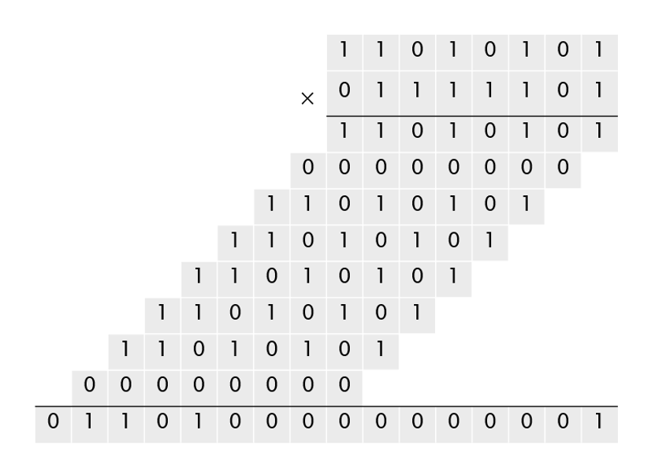
那么这个问题能不能用分治解决呢？直接想可能会有点困难，那么直接见下图：按照bit位数分为两部分，然后根据2的幂的性质去用这两部分去表示原来的数字，那么原来的x y相乘就能更换一种新的表达形式：

OK，那么a b c d同样也可以各自一分为二进行操作，直到最后只有1个数字。于是我们就能够设计如下的伪代码：

那么根据算法，我们能够表示该流程的循环树Recursion Tree：
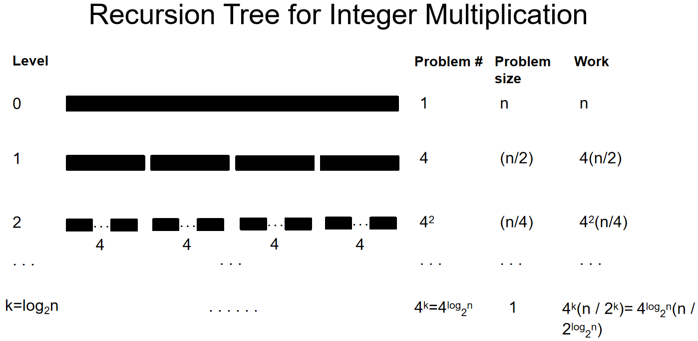
那么我们可以表示时间复杂度：\(T(n)=4T(\frac{n}{2})+\Theta(n)\)，利用Master Theorem，我们直到这是第三种情况，那么时间复杂度就是\(T(n)=\Theta(n^{log_24} = \Theta(n^2))\)
特别地：如果希望计算bc + ad的中间项，其实可以不用再进一步分治，因为： 所以其实只需要ac bd这两个结果需要进行分治就可以了。在这种算法中，一次循环中只需要三个1/2n-bit整数相乘操作。伪代码如下：
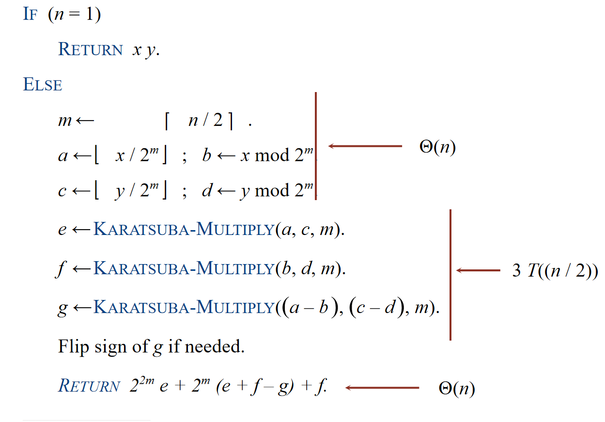
Recursion Tree如下：
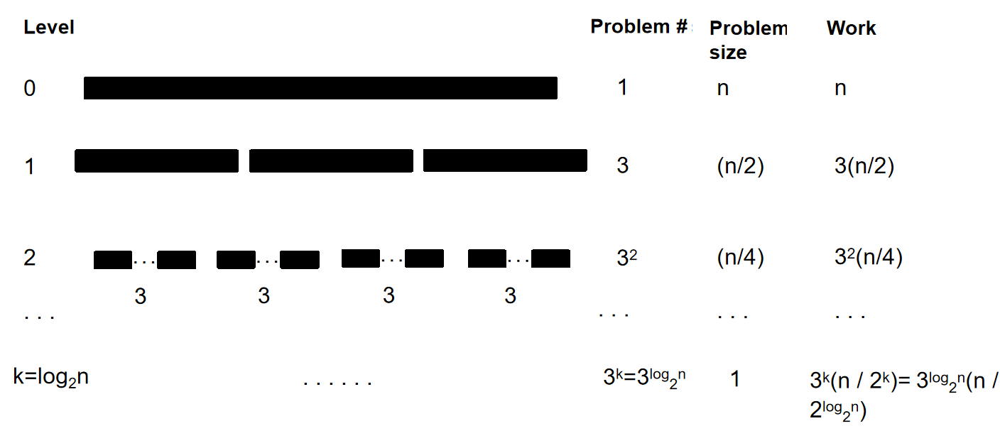
那么我们知道：\(T(n) = 3T(\frac{n}{2}) + \Theta(n)\)，根据Master Theorem可知这是第三种情况，因此时间复杂度是：\(T(n) = T(n^{log_23})\)
Matrix Multiplication
学过线性代数的都知道，两个方阵的乘法是十分煎熬的，尤其是行列数较大的时候。事实上，计算机也苦于矩阵乘法高额的计算量。有没有什么办法能够减少计算量呢？分治思想能不能帮忙起到作用呢？
考虑两个四阶方阵的乘法，那么能不能以二阶方阵为单位，然后去拆分大矩阵乘法的过程呢？如下图的分解问题的思路：把矩阵划分出小矩阵后，小矩阵也能视为entry，去进行矩阵乘法。
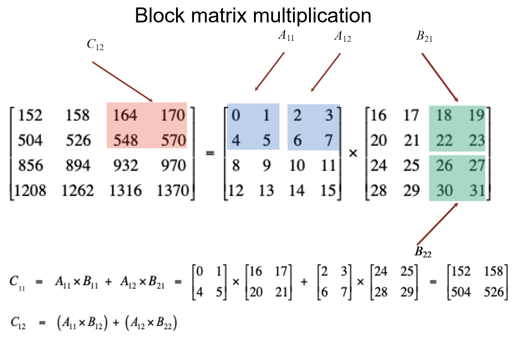
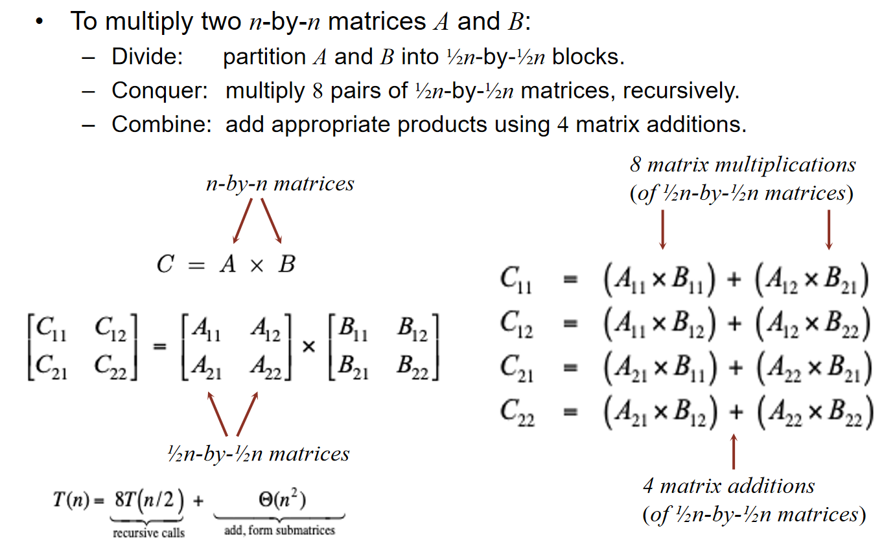
但是很不幸的是，这貌似并不能减少时间复杂度。原来的n阶方阵相乘，一共有\(n^2\)个元素，每一个元素是由n个乘法后相加得到的，因此计算复杂度是\(\Theta(n^3)\)。而如果使用了上述的划分方法，依据主定理，\(log_28 = 3\)，说明时间复杂度还是\(\Theta(n^3)\)。那这个算法有什么用呢？答案是貌似没有用，但是提供了优化思路：Strassen’s trick
核心思路：同样是n阶方阵划分为n/2方阵，但是strassen仅仅使用了7个子矩阵乘法就组合出了原矩阵。示意图与伪代码如下图所示：
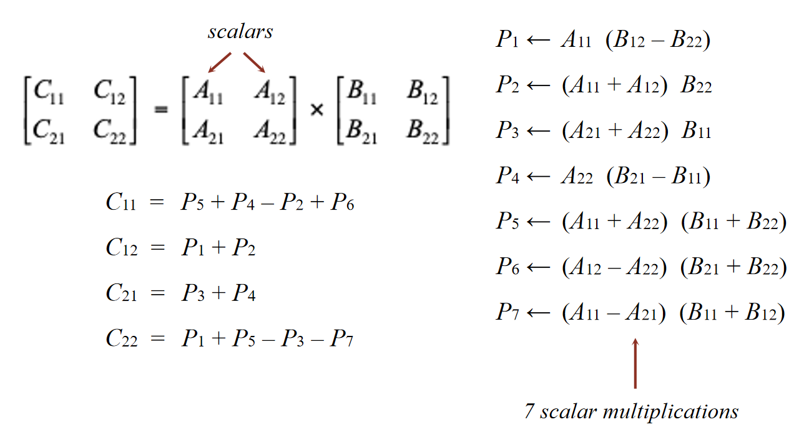
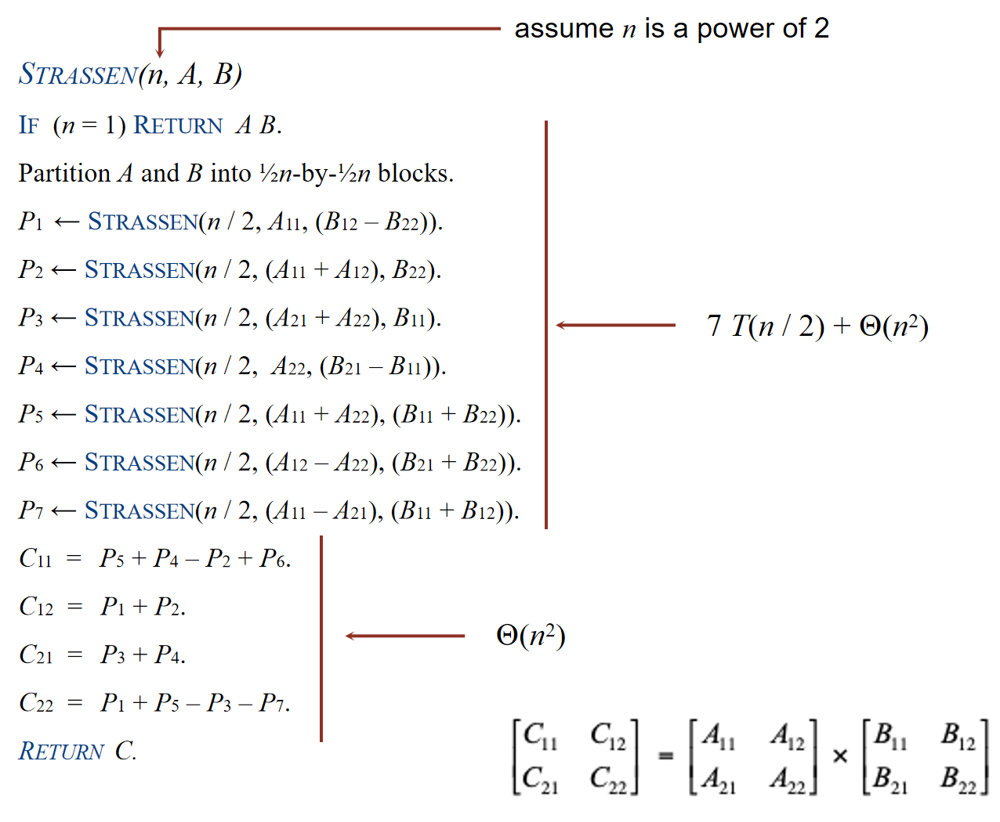
那么这样一来，计算复杂度根据主定理就变成了：\(\Theta(n^{log_27})\)。这看似已经是一个happy ending for a story了，但是还有一个灵魂问题：为什么能化简到7次乘法？为什么不能是6次？事实上有很多上世纪的研究已经探讨过这个问题了，结论就是：用6次即以下的乘法，对于n/2的划分方法来说，是不可能的。后人一步步地尝试在计算复杂度上取得突破，不论是改变划分方法，还是优化表达方式以减少乘法次数。
Fast Fourier Transform
FFT，快速傅里叶转化，is a fast way to convert between time domain and frequency domain。但是换一种角度来说，FFT is also a fast way to multiply and evaluate polynomials。在接下来的例子介绍中，采用后者的审视角度。
首先见下图所示的多项式的coefficient representation；其次，我们知道代数基本定理：一个最高n次幂的虚数系数的多项式有n个虚数根。
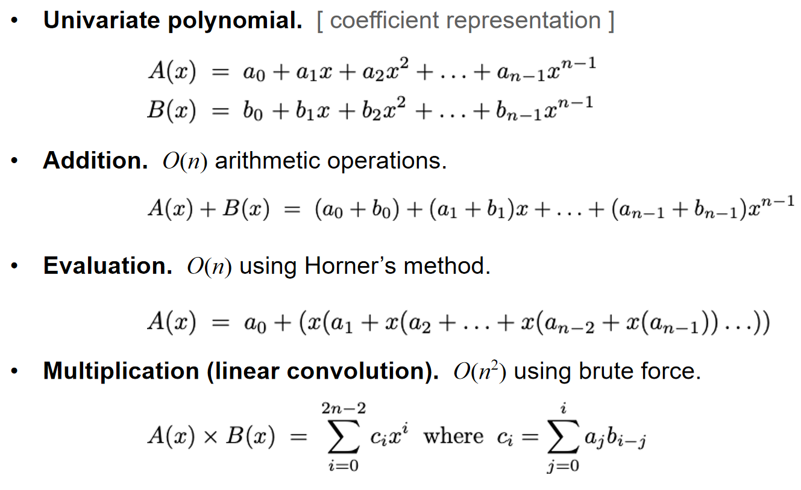
同时，多项式也可通过point-value representation：

这两种表达方式，在多项式间乘法和代值(multiply and evaluate)这两方面的时间复杂度，各有优略：coefficient方式乘法的时间复杂度是\(\Theta(n^2)\)，代值是\(\Theta(n)\)（这点都能感性理解）；而point-value方式乘法的时间复杂度是\(\Theta(n)\)，代值是\(\Theta(n^2)\)。能不能把两者的优势都结合起来？
首先要了解两个表达方式能不能相互转化；

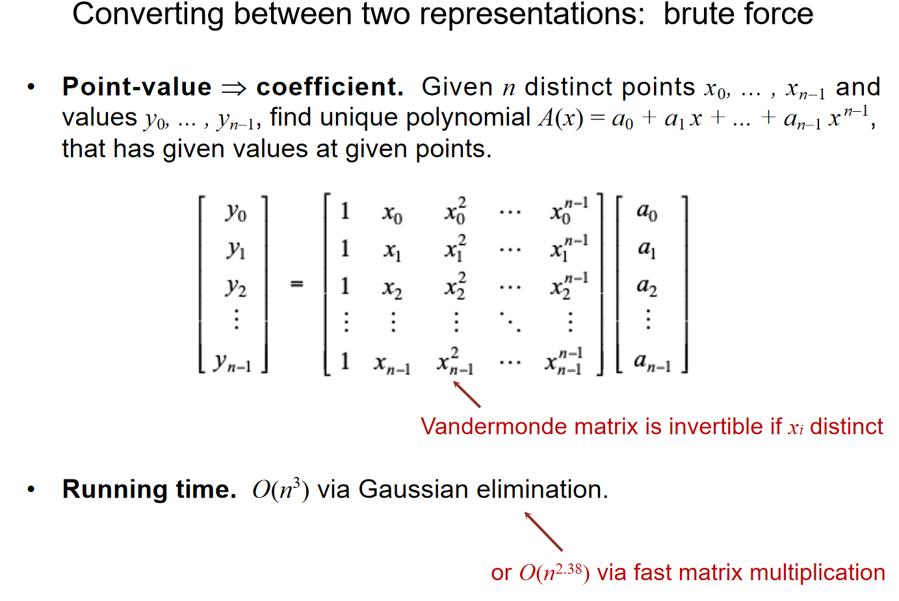
其次，对于一个多项式来说，可以以奇数项偶数项为依据进行划分：

然后，补充Roots of Unity的概念，便于后续的表示：
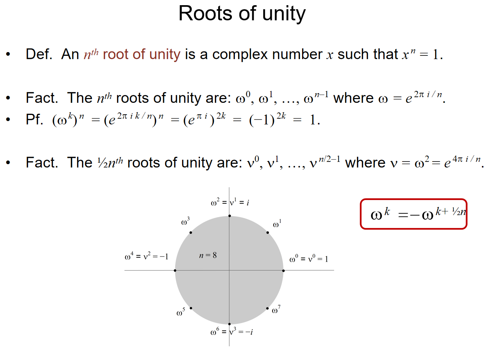
那么，就可以采用如下图的分治进行Evaluation：
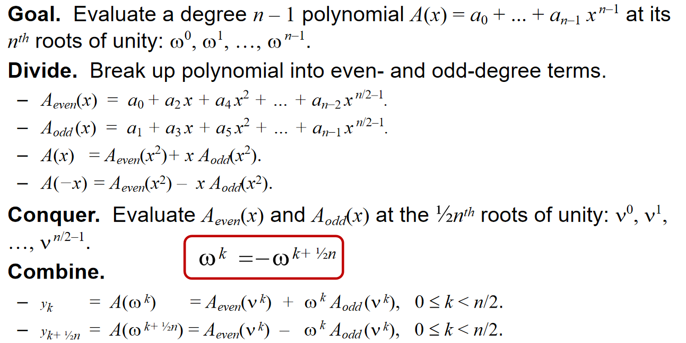
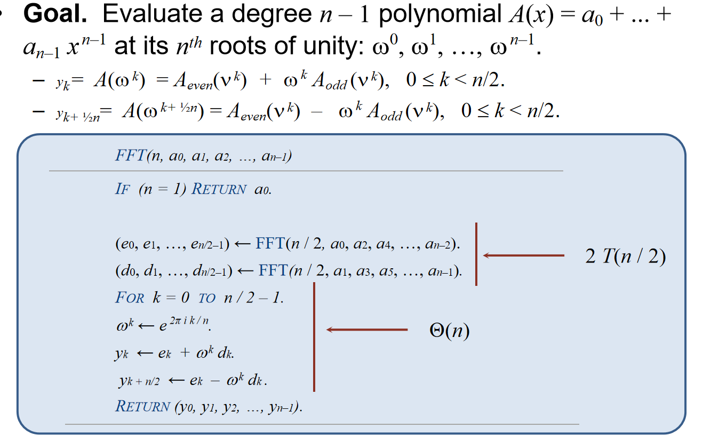
因此有：The FFT algorithm evaluates a degree n – 1 polynomial at each of the nth roots of unity in $O(n logn) $arithmetic operations and O(n) extra space.
可能还会有点蒙圈，如下的解释来自ChatGPT 4o，可能更加的简洁易懂：(核心在于旋转因子的设计，但是没有必要理解它；只需要抓住合并子FFT结果的时候所做的操作是什么即可)
蝴蝶操作是快速傅里叶变换（FFT）中的关键步骤，它用来合并递归分治法中得到的子问题的结果，从而得到最终的DFT结果。蝴蝶操作之所以必不可少，是因为它巧妙地将分解后的小规模DFT结果组合起来，形成更大的DFT结果，从而加快整体计算过程。
我们已经知道FFT是通过分治法来减少计算复杂度的。在FFT中，给定一个长度为 NNN 的序列 \(x_n\)，它会递归地将这个序列拆分成两部分：
- 偶数项序列 \(x_0, x_2, x_4, \dots\)
- 奇数项序列 \(x_1, x_3, x_5, \dots\)
这样，一个长度为 N 的DFT可以被拆解成两个长度为N/2 的DFT，分别计算偶数和奇数项的DFT。
分解完之后，虽然我们得到了两个较小的DFT结果，但这并不是完整的DFT结果。我们还需要将这些小规模的DFT结果组合成完整的DFT。
通过分治法拆分得到的偶数项DFT EkE_kEk 和奇数项DFT OkO_kOk 代表的是原始序列中的不同部分。为了得到完整的DFT结果，我们需要将这些结果组合成一个长度为 NNN 的序列。这个组合过程需要引入所谓的“旋转因子”（即 \(e^{-i \frac{2\pi}{N} k}\)，也称为“蝴蝶因子”），这个旋转因子是DFT的本质特征。
FFT中的蝴蝶操作通过以下公式来组合偶数和奇数部分的DFT：
\(X_k = E_k + W_k \cdot O_k\)
\(X_{k+N/2}=Ek−W_k⋅O_k\)
其中：
- \(E_k\) 是偶数项的DFT结果。
- \(O_k\)是奇数项的DFT结果。
- \(W_k = e^{-i \frac{2\pi}{N} k}\)是旋转因子（蝴蝶因子）。
这就是蝴蝶操作的核心，它使用旋转因子将偶数和奇数部分的DFT结果组合起来，得到完整的DFT结果。
Technical skill
在这一章节，将会总结求分治时间复杂度的技巧和题型。
数列题
一类的题目十分类似于高中数列题，需要大量使用高中数学中做数列题的技巧，以及对迭代树的理解。
例1：\(T_1(n) = \begin{cases}\Theta(1),& 1\leq n\leq k\\ T_1(k) + T_1(n - k) + \Theta(n),& n> k \end{cases}.\) (\(k\) is a constant.)
Since \(T_1(n)=\Theta(1),1\leq n\leq k\), so when \(n=mk\), k is any constant integer, according to the recursion equation we have: Therefore the time complexity is \(\Theta(n^2)\).
例2：\(T(n) = T(n-1) + \Theta(c^n),c>1\) 上述式子全部相加得到：\(T(n) = \Theta(\sum_{i=1}^{n} c^i) = \Theta(c^n)\)
例3：\(T(n)=\Theta(n) + \frac{1}{n}\sum_{i=0}^{n-1}(T(i) + T(n-i))\)。其实这道题就是在求快速排序的期望时间复杂度


换元+主定理/迭代树
例4：\(T_3(n) = 2T_3(\sqrt{n}) + \Theta(\log n)\)
Let \(n=2^m\), we have:\(T_3(2^m) = 2T_3(2^{\frac{m}{2}}) +\Theta(m)\). Then we let \(t(m) = T_3(2^m)\), we have: Right now we can use the master theorem, we have: So finally, let \(n = 2^m\), we have the time complexity result: 例5：\(T(n) = T(\frac{n}{2})+\Theta(logn)\)
Let \(n=2^m, T(2^m)=S(m)\), we have: